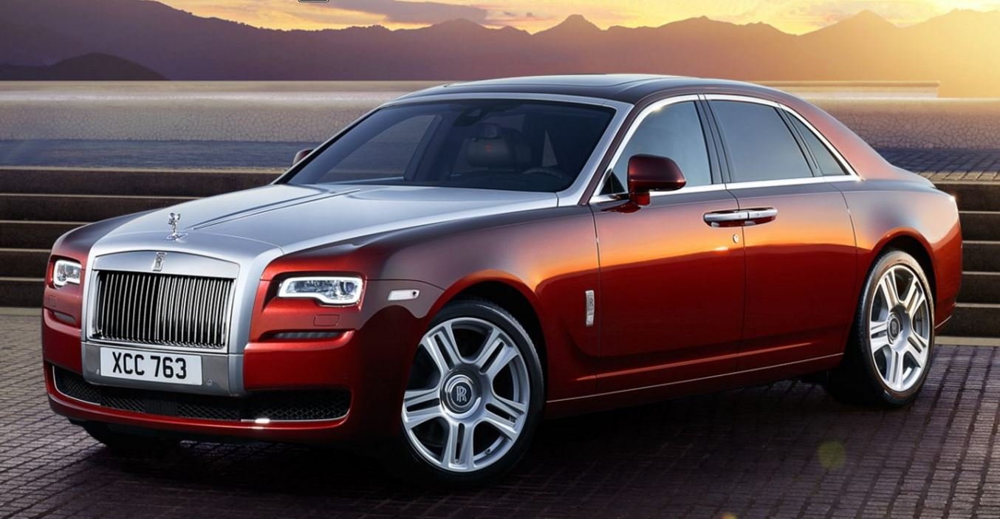

ROLLS ROYCE
The Rolls-Royce Ghost is a full-sized luxury car manufactured by Rolls-Royce Motor Cars. The "Ghost"
nameplate, named in honour of the Silver Ghost, a car first produced in 1906, was announced in April 2009 at
the Auto Shanghai show. The production model was officially unveiled at the 2009 Frankfurt Motor Show.
Fuel
Type - Petrol
Engine Displacement cc - 6750
No. of cylinder - 12
Seating Capacity -
5
Transmission Type - Automatic
Body Type - Sedan
WLTP Mileage - 6.33 kmpl
